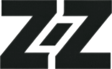
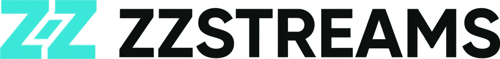
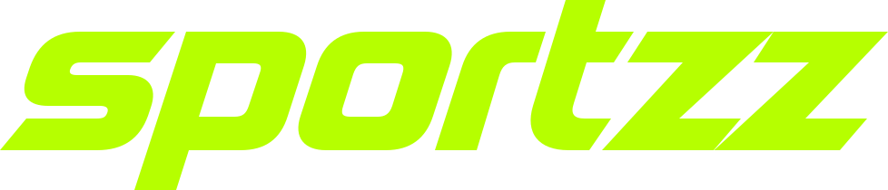
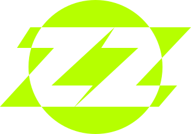
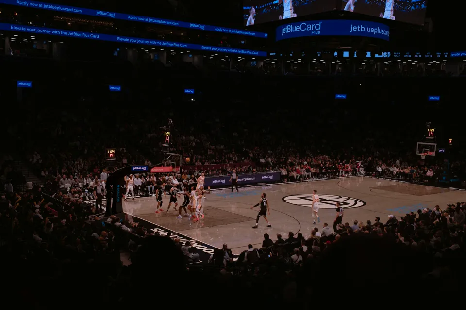
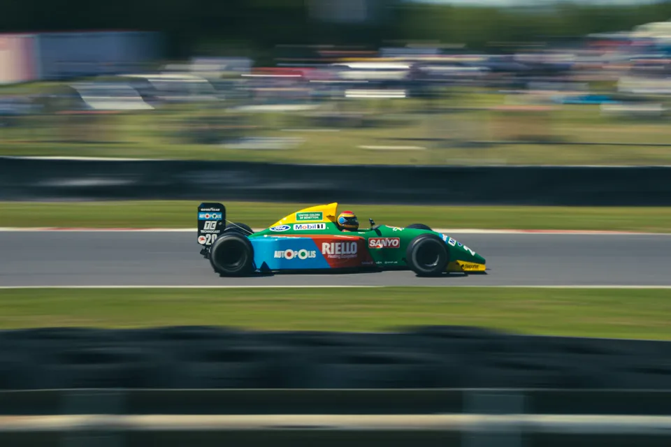

Content comes first
Give programmes space. Keep settings quiet. A category image suggests a sport; it never proves a channel is live.


ZZSTREAMS / LIVING REFERENCE / 02
A new name. The same clear visual language. A calm place for all your television, from the first play to the smallest setting.

TWO STREAMS. ONE PLACE.01 / THE CHARACTER
Keep the excitement in the content and the clarity in the interface. ZZSTREAMS is energetic without shouting, informed without assuming expertise, and honest about what is known.
Give programmes space. Keep settings quiet. A category image suggests a sport; it never proves a channel is live.
One primary action per task. Use concrete verbs, visible outcomes and reversible choices. Keep labels beside unfamiliar icons.
Distinguish saved, checking and verified. Keep the last useful information visible when a request fails.
“Channel saved. You can watch it from Watch.”
“Canal guardado. Puedes verlo en Ver.”
Avoid: “Awesome! All systems go!”
“Could not load the guide. Your channels are unchanged. Try again.”
“No se pudo cargar la guía. Tus canales no han cambiado. Reintentar.”
Avoid blame, unexplained codes and promises of live signal.
02 / THE SIGNATURE
Two interlocking streams and a direct, uppercase wordmark. Always spell ZZSTREAMS in capitals, including the S immediately after ZZ. Generated through Magnific with Nano Banana 2 at 1K. These are transparent raster derivatives, not vector masters; both original concepts and their provenance are retained.

Primary · cyan symbol and ink lettering on a light surface.

Reverse · the same geometry, with paper lettering on ink.
The wordmark stands alone in compact navigation. Use the complete lockup when there is room, and the symbol for a compact identity tile. Preserve aspect ratio and at least ⅛ of the mark height as clear space. Prefer a wordmark height of 24px; compact phone navigation is 20px.
Generated concept · 1K copy · Generation and derivative record
Cyan #2EE6D6, deep ink, Inter, Barlow, the supplied icon family and attributed sports imagery continue to define the interface. The old SPORTZZ artwork remains untouched as provenance. Future logo work defaults to Nano Banana 2 at 1K.

Positive · supplied ink variant on paper.


Reverse · supplied white variant on ink.


Heritage · original #B6FF00. Never present this file as cyan.
Signal · a new background application, unchanged black artwork.
At least ⅛ of the mark’s rendered height on every side. Here: 80px high, 12px padding (minimum 10px). Exclude this space from other graphics and edges.
Wordmark: prefer 24px high; compact navigation ≥20px. Symbol ≥24px high. An icon button still needs a 48px target. Print minima remain supplier proposals pending print proofs.
Preserve the SVG aspect ratio.
The original slant is already part of the mark.
No faded marks, outlines, cropped counters or busy photos behind the logo.
03 / THE PALETTE
Cyan identifies the main action. Ink and paper carry the interface. Lime retains the original identity; ember is reserved for live/recording emphasis. Semantic labels always include words. Values below read directly from the shared tokens.
Primary action; ink text.
Original identity; compact preset.
Live emphasis; ink text.
Light canvas; dark text.
Dark canvas.
Dark surface; light-theme text.
Inset dark surface.
Theme-aware text and focus.
Use the paired success badge for text.
Needs attention, not necessarily failure.
Neutral help and progress.
Theme-aware error on its paired surface.
Target ≥4.5:1 for normal text; ≥3:1 for large text and meaningful control boundaries. Decorative dividers need not carry meaning. Do not use white on signal, lime or ember for small labels.
04 / THE VOICE IN TYPE
Supplied Barlow Condensed Semibold for display. Supplied variable Inter for reading and controls. Local fonts with system fallbacks; no third-party font request. Original programme names stay unchanged.
Use sentence case. Reserve uppercase for short eyebrows. Keep paragraphs within 68 characters per line; avoid condensed body text. Inputs remain 16px on phones. Font fallbacks: system-ui for Inter, Arial Narrow then sans-serif for display.
05 / STRUCTURE & SURFACES
Build on a four-point scale. Group related controls closely and separate different tasks generously. Let image-led viewing layouts breathe; keep administration predictable across all three composition presets.
1px dividers; stronger control borders. One quiet shadow for raised surfaces and a deeper shadow for dialogs. Page → card → navigation (4) → feedback (6) → native dialog top layer. No ornamental glass behind text.
One content column; 16px gutters; stacked primary actions. Keep the programme name visible beside its thumbnail.
Two-column collections where space allows; drawer navigation. Avoid squeezing a desktop rail into the reading area.
Persistent rail; up to 1440px content. Collection grids become three columns above 1100px. A twelve-column grid is a composition aid, not twelve cards.
06 / SMALL, PRECISE SIGNALS
All twelve supplied Signal Pitch SVGs: a 24px grid, 1.5px rounded strokes and a 20px live area. Preserve their paths. Use current text color through CSS masks; hide decorative icons from assistive technology.
Default 24px, 8px from the label, aligned to the control center. 16px optical variants remain pending device QA; use text when the collection has no suitable icon. Icon-only controls need an accessible name and a 48px target. A favorite’s selected state adds a visible label and pressed state.
07 / THE WORLD OF SPORT
Use supplied, attributed category photography for the corresponding sport. Keep channel identity and programme artwork distinct. A football photograph belongs to Football, not an unrelated news or documentary channel.


Use a neutral surface with a readable name. Prefer an available channel logo, then source-qualified guide identity, then a relevant category image. A white logo needs a contrasting plate.
Category videos and their posters were reviewed. These mockups use stills: motion adds little to the tasks, and the static preview keeps media disabled. Future decorative video needs a poster, explicit pause control, no audio and no autoplay under reduced motion or data-saving preferences.
Existing coastline illustration remains labelled generic; it predates this work. Optimized sports concepts and their high-resolution masters were inspected, but are unnecessary here.
08 / SHARED COMPONENTS
These examples use the same button, field, badge, dialog and icon styles as the interactive mockups. Actions below are local demonstrations. Hover, press, Tab and switch themes to inspect their states.
The component family has expanded. Explore selection controls, button variants, chips, menus, tabs, navigation, sheets, search, native date/time inputs, cards, progress, tooltips and undoable snackbars.
Open the component libraryMaterial comparison & rationalePrimary: one next step. Secondary: another path. Destructive: explicit consequence and confirmation in the real workflow. Disabled: explain the missing prerequisite.
Local example ready. Nothing is sent or saved.
Showing Football and Tennis examples.

Use the name shown in your channel list.
Enter a whole number of 1 or greater.
Edit the number to see validation clear. Errors name the fix and stay beside the field.
A live label needs playback evidence in the application. Clock time, import success and stock photography are not proof. Always include text; color alone is insufficient.
Loading guide… (static loading specimen)
Try a different name or clear your filters.
Could not load the guide. Your channels are unchanged.
PLAYBACK CONTROLS / LOCAL DEMONSTRATION
Paused example. No media is loaded.
09 / ACCESS & MOTION
Accessibility is part of the visual language. These pages reflow rather than shrinking controls. Keyboard focus stays visible in both themes and in every presentation.
48px target goal; 44px minimum in existing compact review controls. Tab reaches every action. Use native buttons, labels and dialogs. Escape closes dialogs; focus returns to the opener. Don’t hide meaning in hover.
120ms feedback; 200ms small transitions; 320ms larger context changes. Prefer color or opacity over travel. Respect reduced motion: remove transitions and animation, keep the final state visible.
Check 320px reflow, zoom and long translated labels. Use visible errors, meaningful names and text status. Keep image dimensions reserved and actions usable when imagery fails.
Current revision: ZZSTREAMS. The owner requested the working name, a new Magnific-generated logo and a Material-informed component expansion. See the interactive library and gap analysis. The earlier identity decisions below explain the foundations; the current logo guidance above supersedes the SPORTZZ signature.
10 / EVOLUTION RECORD
9 November 2026 · adopted for this static mockup study. The designer’s v2 document is a proposal; this reference records how it is applied here, without implying production implementation or final owner approval.